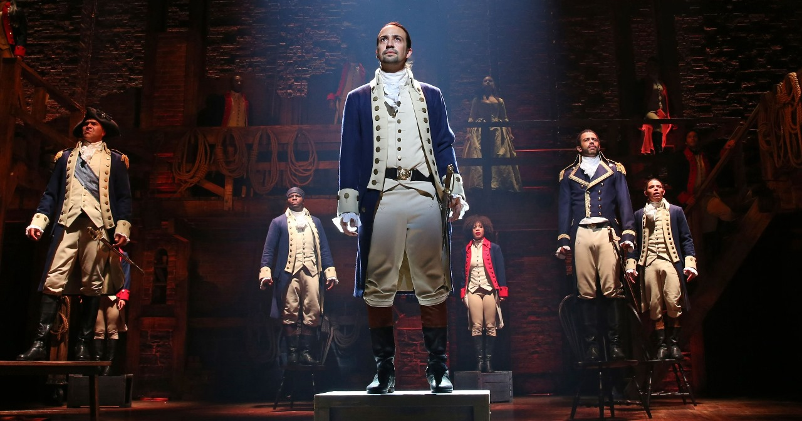

A Mente Criativa por Trás de Hamilton: Lin-Manuel Miranda e Sua Inspiradora Jornada
Por Gretzel Kattia - 6 de março de 2024
Lin-Manuel Miranda, um visionário no mundo do teatro musical, concebeu a ideia de "Hamilton" de uma maneira que transcende as fronteiras tradicionais do gênero. Mas o que motivou esse talentoso criador a mergulhar na história dos pais fundadores dos Estados Unidos e apresentá-la de uma maneira tão inovadora?
A paixão de Miranda pela história e pelo teatro musical foi fundamental. Fascinado pela vida de Alexander Hamilton, ele viu a oportunidade de contar uma história pouco explorada, mas incrivelmente relevante. Hamilton, um imigrante órfão que se tornou uma figura central na construção dos Estados Unidos, ressoou fortemente com Miranda, refletindo seus próprios valores e identidade como um descendente de porto-riquenhos.
A inspiração para a abordagem musical única também veio de seu amor pela diversidade musical. Miranda, influenciado por uma variedade de gêneros, desde hip-hop até música tradicional de teatro, viu a oportunidade de criar algo autenticamente americano, refletindo a riqueza cultural e musical do país.
Além disso, a crescente necessidade de diversidade e inclusão no mundo do teatro impulsionou Miranda a apresentar uma narrativa histórica com um elenco notavelmente diversificado. Ele queria não apenas contar uma história cativante, mas também criar oportunidades para artistas de diferentes origens brilharem nos papéis de figuras históricas icônicas.
A habilidade única de Miranda como letrista e compositor, combinada com sua visão apaixonada, deu origem a um espetáculo que desafiou as expectativas e redefiniu o cenário do teatro musical. Sua capacidade de equilibrar a narrativa histórica com elementos contemporâneos, como as referências de cultura pop e o uso inovador da música, é uma marca registrada de sua genialidade.
Em última análise, foi a combinação de paixão, identificação pessoal, visão musical e o desejo de quebrar barreiras que incentivou Lin-Manuel Miranda a criar "Hamilton". Sua jornada criativa e seu compromisso com a autenticidade renderam não apenas um musical revolucionário, mas uma obra-prima que continuará a inspirar e ressoar com as audiências ao redor do mundo.